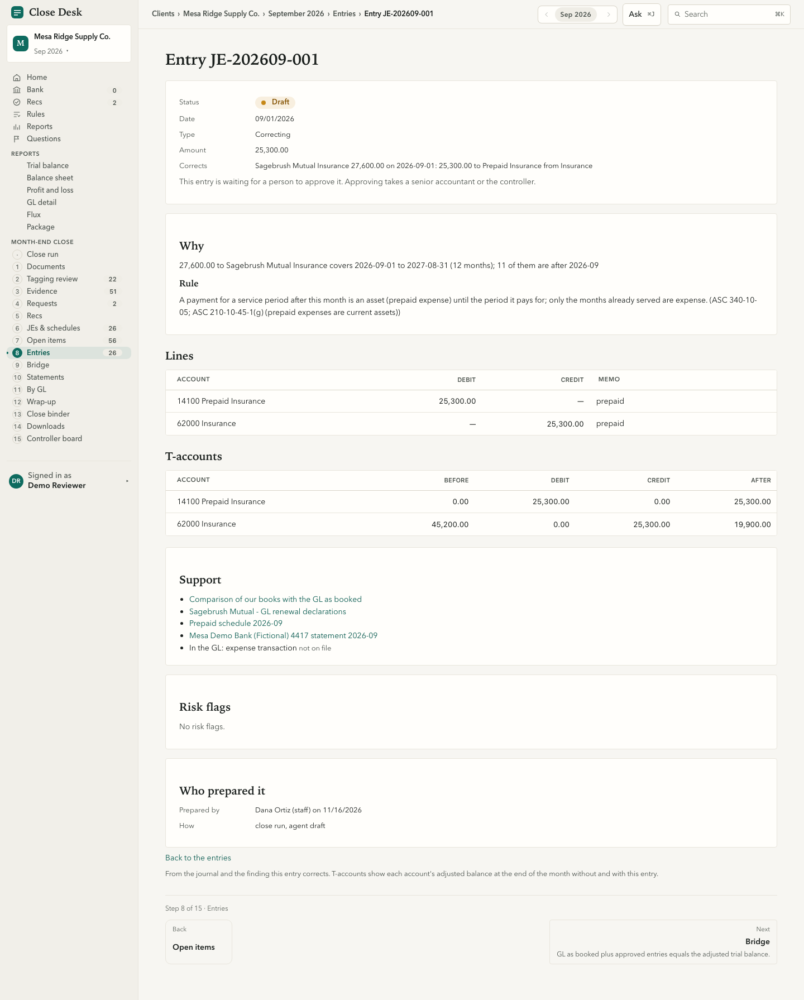
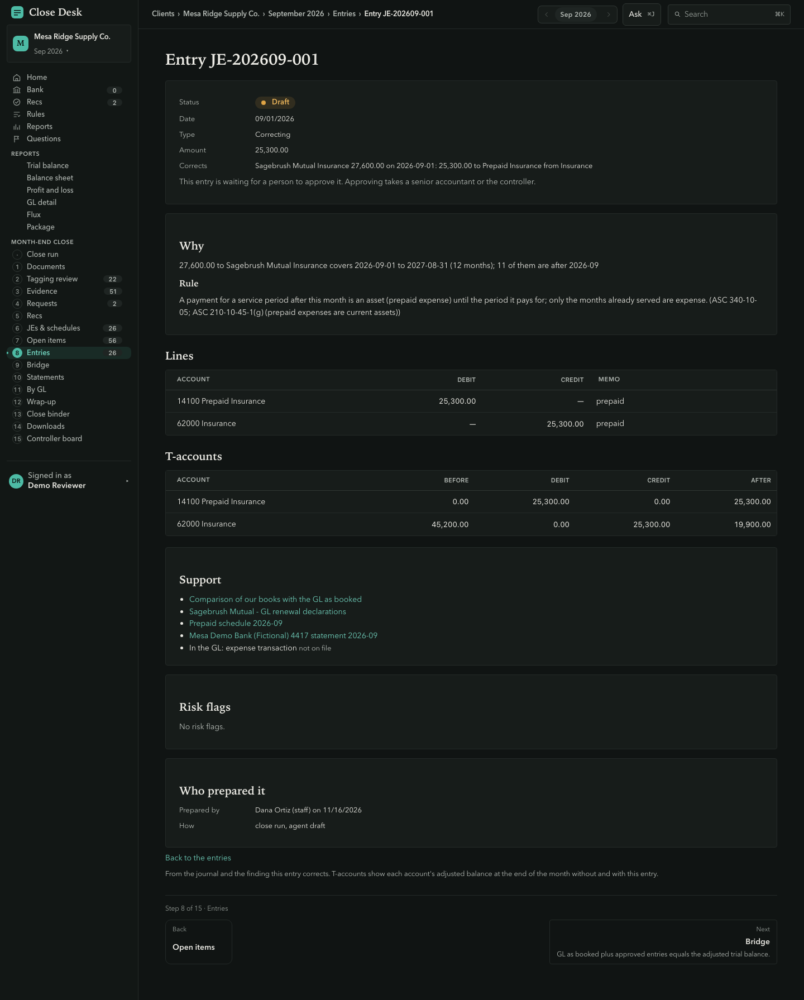

Close Desk
This is the real app, running on a made-up company's September close. The prep is already done: statements read, accounts reconciled, errors found and journal entries drafted.
Click around, open an entry, and approve or reject it.
Open Close Desk See the results
No login needed. It opens on a fictional company, and your changes reset after a day.

